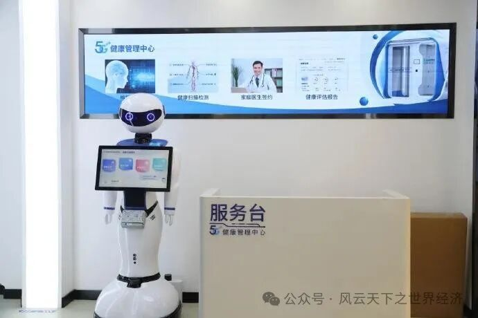
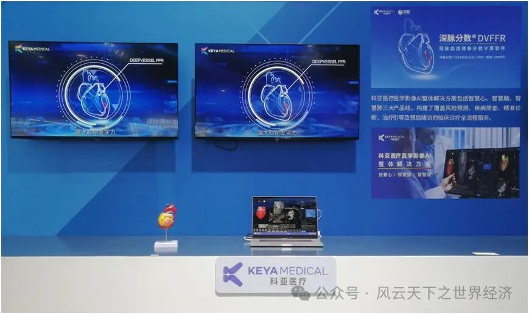
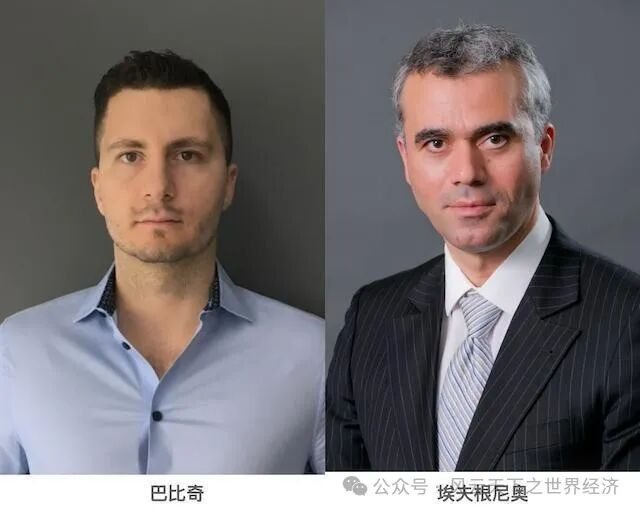

前言
Mia®的名字来源于Mammography Intelligent Assessment，是由Kheiron Medical开发的一款用于乳腺筛查的突破性人工智能平台。作为一种AI工具，在长达6年的开发和训练后，"米娅"（Mia）在乳腺癌诊断方面在临床中已经呈现了鼓舞人心的结果。一项由NHS机构的临床医生和Mia一起完成的试点实验显示，在分析了10000多名女性乳腺检查后，Mia成功标记了所有有癌症症状的人，并且还发现了临床医生未能发现的11例乳腺癌早期患者。从统计学看，AI工具的乳腺癌检出率比医生高13%。对于被早期检测出患癌的女士而言，AI医疗给她们带来了好运，然而，检测中的假阳性问题、信息获取中的数据泄露等方面的问题，使持怀疑者不得不重新审视AI医疗的得与失...
1. 一场由需求驱动的变革
随着经济的发展，冰冷的GDP数据不再是人们关注的焦点了，教育、医疗、就业等才是真正的民之所盼。那么目前的医疗商业格局是否可以满足人们的需求呢？据不完全统计，每年中国医疗影像数据以30%的速度增长，而影像医生的增长速度只有4%，说明医生的数量远远无法满足病人的需求。但如果把目光放到基层，乡镇卫生院和社区卫生站却门可罗雀，那么目前的医疗格局出了什么问题呢？
现实情况是，大医院的医疗资源集中，提供医疗服务的能力（供给）更强（大）；同时，大医院的医治水平也更高，那么病人的需求也更高。由于病人需求的价格弹性很低，大医院抬价的动机十分充分。由于医疗限价，大量涌入城市三甲医院，导致大医院产生超额需求，小医院又供大于求，医疗资源严重错配，从而进一步挤压了中小医院的生存空间，加重了大医院的负担。因此，受到需求端的驱动，医疗革命势在必行。

无人问津的小医院折射出的医疗资源错配问题
那么，AI是如何使得供给需求的匹配得出一个最优解呢？实际上，AI最大的功劳在于提供了一个和专业医生相互补充的医疗解决方案，在这个基础之上，在最大程度上照顾了不同人群的就医需求。
AI超强的预测能力是其嵌入商业中的关键。AI大大降低了预测成本，使得医院（尤其是中小医院）提供医疗服务的能力大大增强了。当AI入驻医院，医生可以根据以往数据以及相应分析做出精确诊断，在一些临床治疗时，也可以做到“好风凭借力”，借助AI的深度学习能力进行精准操作，提高医治的安全性。同时，随着AI预测能力的提高，病人对小医院的需求增加，当过剩供给被完全吸收，使得大医院从常见病中解放出来。当AI和医疗相结合，一位医生所能够问诊的病人越来越多了，医治成本也随AI的引入不断降低，随着医疗行业效率的提高，专业医生不再成为绝对意义上的稀缺资源。在贫穷国家，相对于当地贫瘠的医疗资源，AI医疗对于当地患者而言更是久旱逢甘露。日本富士胶片（Fujifilm）公司制造的x光机，配合印度 Qure.ai公司的人工智能算法，有助于评估一系列包括肺炎、慢性阻塞性肺病（copd）和心力衰竭等方面的疾病，对于尼日利亚农村地区的肺结核筛查而言，这将极大程度上缓解医疗压力，提高医疗效率，可谓天赐良机。
此外，受益于AI技术，基层医院医疗资源不再会浪费。在上海徐汇康健街道的社区医院中，5G、AI、3D元素满满，老年居民使用高科技检测健康的景象已然成为常态。智慧医疗使得优质医疗资源下沉，5G健康管理服务、云远程医疗、AI中医健身......AI赋能使得社区医院给当地居民得到更好地治疗。“易上手”、“方便”、“安心”等评价无不透露出中老年居民对AI医疗的赞不绝口。因此，当AI医疗下沉基层，就可能真正实现“小病不出村，大病不出县”。

上海社区医院AI元素满满
AI深刻地重塑了商业格局，使得医疗行业可以更好地回应和满足市场需求。AI技术使得数据成为一种重要的生产要素，有利于资源的重新配置，使医疗下乡不只是一句口号：因为AI能够使得基层医院也能够配备他们原本负担不起的高水平医疗资源，从而使得诊断和治疗水平得到大幅度提高；对于患者而言，可以有效减少排队的时间，并且可以减少因为求医带来的路途和时间成本；而对于医生而言，有了AI技术的辅助，可以实现更精确的诊断和完善更行之有效的治疗方案。可以说，AI对商业格局的重塑体现了“大医小用”的效果，将高质量医疗资源下沉，使得AI技术能够真正普惠最广大人民。
2. 浪潮之巅
需求端的驱动毫无疑问是AI赋能医疗的催化剂，但AI技术的高速发展从供给端为AI医疗行业的发展提供了一片沃土。受益于机器学习技术的发展，深度学习逐渐成为AI技术发展的关键动力。深度学习对于获取和处理海量数据并进行数据分析具有极大潜力，这些技术特征有助于颠覆传统医疗行业的商业模式。实际上，传统医疗行业面临的供需不匹配的问题正是源于此，亟待解决的问题是医疗资源不均衡，AI通过提高诊疗效率有助于推动资源的高效配置，也正在重塑医疗行业的商业格局。
吴军在《浪潮之巅》一书中写道，“近一百年以来，总有一些公司很幸运地、有意无意地站在技术革命的浪尖之上。一旦处在了那个位置，即使不做任何事，也可以随着波浪顺顺当当地向前漂十年，甚至更长时间。”市场的培育使得医疗行业迸发了前所未有的生机，创造了一片蓝海，而以科亚医疗为代表的医疗企业，提供了AI诊断的解决方案，成为了赶上AI+医疗浪潮的幸运儿。
科亚医疗合伙人焦桐所说，“科亚选择了从‘见山不是山，见水不是水’的赛道起跑”。科亚医疗正引领着AI医疗诊断行业的商业模式创新。传统的AI医疗诊断能够在一定程度上提高诊断效率，如鹰瞳科技的Airdoc-AIFUNDUS (2.0)对视网膜病变的有效诊断，但离开AI，医生独立诊断仍然可以完成，因此，AI只是提高了诊断效率，存在的只是存量价值。科亚医疗的智慧诊断和智慧治疗业务产品更体现了科亚医疗的商业模式创新，直接为患者提供AI精准诊疗服务，具有增量价值。
对于求医的患者而言，诊断环节不可避免地需要受到一定程度的
创痛，而治疗环节的疼痛更是无法避免。那么是否存在无创检测的新突破，能够更好地减少患者的疼痛、满足患者的需求呢？科亚医疗正在开创AI赋能的道路。在智慧诊断业务上，科亚医疗运用深度学习技术，推出针对心、肺、脑的深脉检测产品。科亚医疗所采用的深脉分数技术实现了对患者冠状动脉生理功能进行无创评估，不仅具备去导管和无创测量，同时大大缩短了检测时间成本，将检测时间从1~3天缩短至10分钟以内，并且该技术大幅降低了检测成本，其边际成本随着数据积累快速下降。科亚医疗还在智慧治疗方面有所布局，推出的深脉震波球囊可对患者钙化板块精准震裂，减少对患者的损伤并降低疼痛感。

科亚医疗亮相中关村论坛
国家药品监督管理局如此评价科亚医疗AI技术的首创和突破性意义：“可以让患者避免不必要的介入手术，能够降低费用，缓解患者痛苦，并可用于早期诊断，具有显著的经济社会效益”。科亚医疗的成功毫无疑问是源自于AI技术和医疗行业的结合，从科亚医疗的产品中我们看到了AI技术的作用：降本、增效和扩容。在降本方面，AI降低了预测成本，从而也降低了治疗的成本；同时，无创检测的方式减少了患者检测受到的辐射以及导管插入的痛苦。在增效方面，通过提高预测精确度，AI可以使得医疗资源的利用率更高；随着检测准确度不断提高，减少了手术量和过度治疗的情况。在扩容方面，科亚医疗证明了AI医疗企业具备重塑医疗格局的能力，通过进一步满足患者需求可以开拓市场，预示着AI将超越传统商业格局，开创一片蓝海。
3. AI医疗的“阿喀琉斯之踵”
透过现实和案例，我们可以看到AI在重塑医疗格局中的重大作用，并且AI似乎“百利而无一害”。然而，即使我们要为AI唱一首赞歌，歌曲中也总有旋律的起伏和节奏的强弱。在斯芬克斯问题中，人作为一种动物是有不同形态的，数据作为AI最倚仗的战友，使得AI具有多个面孔，进一步来说，AI到底是工具还是武器？
我们将目光重新聚到AI的预测成本上。AI使得商业格局重塑，但是在硬币的另一面，AI也带来了连锁反应：由于AI在预测时极为依赖数据，当AI离开数据，那么它的预测能力也就不复存在了，甚至可以说，AI离开数据，就像安泰俄斯这头巨人悬空离开大地母亲，失去了发挥作用的土壤。
数据的价值体现在两个方面：当数据不足时，AI预测的精确度将大打折扣，这时候AI非但不能让医疗行业变得更好，反而引入并扩大了偏见，使得患者无法对症治疗。早在2017年，沃森机器人就进入中国市场，然而囿于数据集的匮乏，沃森至今也没能颠覆医疗格局，《中国新闻周刊》曾经报道过一位60多岁的日本女患者曾被沃森误诊为急性骨髓性白血病，耽误了患者宝贵的治疗时间，可见“正确的评估”远比评估本身更为重要；当数据足够多时，AI将会被训练得十分精确，而且随着预测精确度的提高，将会产生飞跃式改进：相比于从85%~90%（失误率降低1/3），从98%提高到99.9%意味着失误率降到了从前的1/20。从这点中我们可以看到，一旦企业获得先发优势得到大量的数据积累，不断提高的准确率将会使得企业具有市场中的垄断地位，AI医疗和互联网的本质都是赢者通吃，数据霸权导致了马太效应的产生。当发生在互联网和新媒体的数据霸权发生在医疗行业时，我们失去的不仅是产品和服务的议价能力，更多的是生活的便利性和生命安全的保障。
另外，数据还造成了一个更具有威胁的问题，那就是伦理与隐私的问题。比如说，AI是否可以作为独立的一个行为主体，且是否能够获得法律的主体地位？从每个人的切实利益出发，AI医疗可能侵犯患者的个人隐私，一旦泄露将会导致个人隐私的受损。也正如开篇所提及的“Mia”算法之殇：数据如果不可得，算法的精确性无法保证，从而使得AI医疗无法得到预期的效果；而一旦数据权限完全放开，患者对于信息泄露的担忧却又是AI医疗产生的另一个方面的问题。
如果说数据问题深刻展现了AI不可回避的弱点，那信任度的问题则是另一只脚上的“阿喀琉斯之踵”。虽然供求关系在最大程度上决定了医疗格局，但信任度的问题却是一个潜在的问题。当患者都通通涌向大型三甲医院时，并不代表着中小医院不具备相对应的医疗能力。全国两会几乎每年都会提出“常见病不要去三级医院”诸如此类的提案，事实上，对中小医院的不信任直接导致了医疗资源的严重挤兑。医疗领域的负面新闻往往具有放大效应，而人们对于县医院、社区医院、小诊所的消息更为敏感，因为这些中小医院和三甲医院相比不具备先进的设备、优秀的医生和良好的环境。如果说中小医院在漫长的经营过程中都无法积累起一定的口碑，那么AI医疗作为新鲜事物进入大众的视野是否能获取患者的信任则是一个更为现实的问题。
欧洲工商管理学院（INSEAD）决策科学助理教授巴比奇认为，AI算法不提供预测背后的实际原因，而只提供事后理由，解释权也仍在解释对象手中，因此，对AI的信任最终似乎又回到了对医院和专业医生身上。当AI医疗的黑箱被打开之后，我们需要接受什么样的代价，我们是否能够承担这样的代价，至少现在无法给出一个确切的答案。

巴比奇助理教授和埃夫根尼奥教授对于医疗中AI模型的可解释性提出了质疑
4. 生存还是毁灭，这不是个问题
AI作为工具的一面，是推动医疗格局的重塑，在这个过程中医院、医生、患者都可以受益，是一个帕累托改进的过程；但作为武器的一面，它也客观上造成了数据安全、伦理与隐私、患者信任度等方面的问题。
但我们更应该做一个拥抱未来的人，只要能够减少其攻击性，AI必定是能为我们所用的工具。在解决医疗资源紧缺和提高医疗效率方面，AI的上限足够高，以至于我们可以忍受“AI病”。我们更应该通过完善法规、提高技术、推动良性竞争等方式不断规范AI医疗市场，而不是要把AI医疗扼杀在摇篮里，事实上，这也不可能做到。
今天的AI医疗更像是一位新生的婴儿，养育他的过程一定艰辛重重。但是它也为消减人类病痛提供了无限的想象空间，为了这些为数不多的可能性，人类应该付出足够耐心和努力。